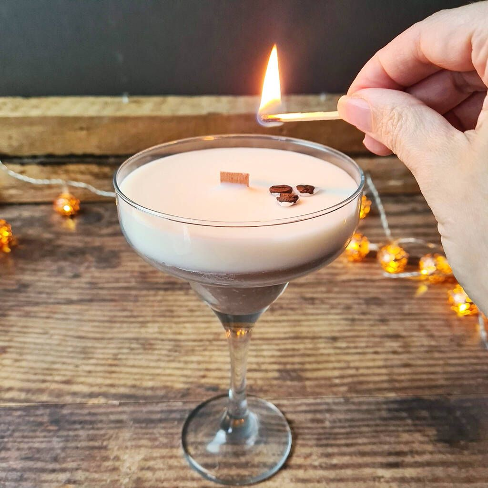

Over deze Workshop
Uw lievelingscocktail, maar dan om aan te steken
Tijdens deze workshop leert u stap voor stap hoe u een cocktailkaars maakt die een lust is voor het oog én de neus. Van het smelten en kleuren van de wax tot het toevoegen van de juiste geur en de afwerking met realistische details: u maakt een kaars die zo van de barkaart lijkt te komen. Onder begeleiding van onze ervaren makers ontdekt u alle kneepjes van het vak, terwijl u geniet van een hapje en een drankje in een gezellige sfeer.
Deze workshop organiseren wij in samenwerking met CandleDelish, specialist in cocktailkaarsen onder het motto "Niet drinken of opeten, maar aansteken!" Dankzij hun kennis en geuren maakt u kaarsen van echte kwaliteit die u met trots mee naar huis neemt.
De workshop geven wij zowel bij u op locatie als in ons eigen atelier in de Betuwe. Komt u liever naar ons toe, dan ontvangen wij u graag in onze volledig ingerichte werkruimte. Wilt u dat wij langskomen, bijvoorbeeld voor een teamuitje op kantoor of een feestje bij u thuis? Dan brengen wij alle materialen gewoon mee.
De workshop
Laat uw creativiteit de vrije loop tijdens onze workshop Cocktail Kaarsen Maken. U kiest zelf uw favoriete cocktailgeur en kleur, en wij leren u alles over wax, geurtoevoeging en kleuren. Terwijl uw kaars afkoelt, vertellen wij leuke weetjes over kaarsen maken en hoe u er het langst plezier van heeft. Aan het einde van de workshop gaat iedereen naar huis met een eigen, unieke creatie: een perfect handgemaakt cadeau of een pronkstuk voor in huis.
Voor Iedereen Geschikt
Of u nu al vaker kaarsen heeft gemaakt of nog nooit met wax heeft gewerkt, iedereen kan meedoen! Geen ervaring nodig. Pak een schort, kies uw geur en laat u inspireren. Alle materialen zijn inbegrepen in de workshop. U hoeft alleen uw creativiteit mee te brengen. De workshop is geschikt voor volwassenen en kan ook voor groepen worden georganiseerd.
 Creatieve Vrijheid
Creatieve Vrijheid
Geen ervaring nodig. Onze workshops zijn ontworpen voor deelnemers van alle niveaus.
 Kies Uw Cocktail
Kies Uw Cocktail
Van Aperol Spritz tot Piña Colada: u kiest zelf uw favoriete geur en kleur.
 Mee Naar Huis
Mee Naar Huis
U gaat naar huis met uw eigen handgemaakte kaars, een uniek cadeau of pronkstuk.
Hapje & Drankje
Creëer in een ontspannen, gezellige sfeer, ideaal voor groepen en feestjes.
Kies Uw Geur
Samen met CandleDelish bieden wij een reeks heerlijke cocktailgeuren waar u uit kunt kiezen. Elke geur is zorgvuldig samengesteld zodat uw kaars net zo verleidelijk ruikt als het echte drankje, maar dan wel 40 uur lang brandt in plaats van op te zijn na één slok.
 Aperol Spritz
Aperol Spritz Piña Colada
Piña Colada Berry Gin & Tonic
Berry Gin & Tonic- Strawberry Martini
- Passionfruit Martini
 En meer seizoensgeuren
En meer seizoensgeuren
Geuren en kleuren kunnen per workshop en seizoen verschillen. Naast de cocktailcollectie heeft CandleDelish ook iced latte- en dessertgeuren, plus wisselende herfst- en wintercollecties.
Wat Maakt Deze Workshop Bijzonder?
Deze workshop combineert ambacht met een flinke dosis plezier. U maakt niet zomaar een kaars, maar een klein kunstwerkje dat eruitziet als een echte cocktail. De geuren, kleuren en realistische afwerking zorgen voor verrassende resultaten waar u trots op bent. Of u nu op zoek bent naar een origineel teamuitje, een creatieve verjaardag of gewoon een ontspannen middag: deze workshop biedt alles.

Zo heeft u het langst plezier van uw kaars
Tijdens de workshop leren wij u hoe u uw zelfgemaakte kaars het beste verzorgt, zodat u er zo lang mogelijk van geniet:
- De eerste brand telt. Laat de wax bij de eerste keer helemaal tot aan de rand smelten. Zo voorkomt u "tunneling", een ring van harde wax langs de zijkant.
- Knip de lont. Knip de lont voor elke brand bij tot ongeveer 6 mm, voor een mooie, rustige vlam zonder roet.
- Niet te lang branden. Brand uw kaars niet langer dan 4 uur achter elkaar.
- Weet wanneer te stoppen. Stop met branden als er nog ongeveer 1 cm wax over is, zodat het glas niet oververhit raakt.
- Dompelen in plaats van blazen. Duw de lont met een lontdipper in de wax om hem te doven. Zo voorkomt u de rooklucht van uitblazen.
 Praktische Informatie
Praktische Informatie
De workshop Cocktail Kaarsen Maken in het kort:
- Duur: 2 uur
- Professionele begeleiding
- Inclusief materialen (voor ieder wat wils)
- Voor beginners en gevorderden
- De kunstenaar maakt sfeerfoto's en een groepsfoto na afloop
U hoeft alleen uw creativiteit mee te brengen! De workshop kan voor groepen worden georganiseerd en wij geven hem zowel op locatie als in ons eigen atelier in de Betuwe. Voor meer informatie over data, prijzen en het reserveren van uw plaats, neem contact met ons op. Wij beantwoorden graag al uw vragen!
Klaar om uw cocktail te gieten?
Reserveer nu uw plek en kom uw eigen cocktailkaars maken. Wij helpen u graag met alle informatie over beschikbare data en prijzen.